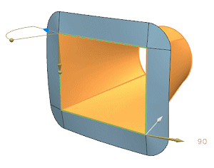
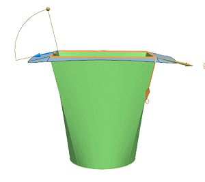
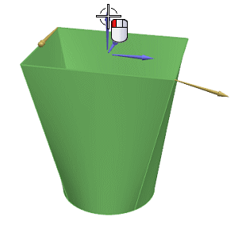
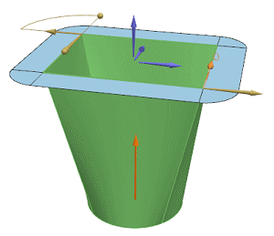
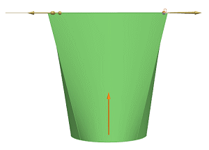
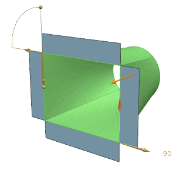
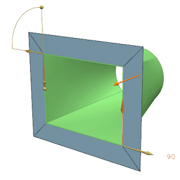

In the Length Law group, in the Value box, type 30 and Enter, or drag the on-screen Value handle to a value of 30.

Rotate around the part to check the extension.

You want all extension surfaces to be flush with the rectangular end condition.
The Angle Law for the extension surfaces is set to 90 degrees which is calculated from the duct transition surfaces.
You must specify a spine to orient the extension surfaces.
In the Spine group, from the Method list, select Vector.
With Specify Vector highlighted, specify a vector in the Z direction.



In the Miter group, from the Method list, select None.

From the Method list, select Sharp.

From the Method list, select Blend to return to the default condition.